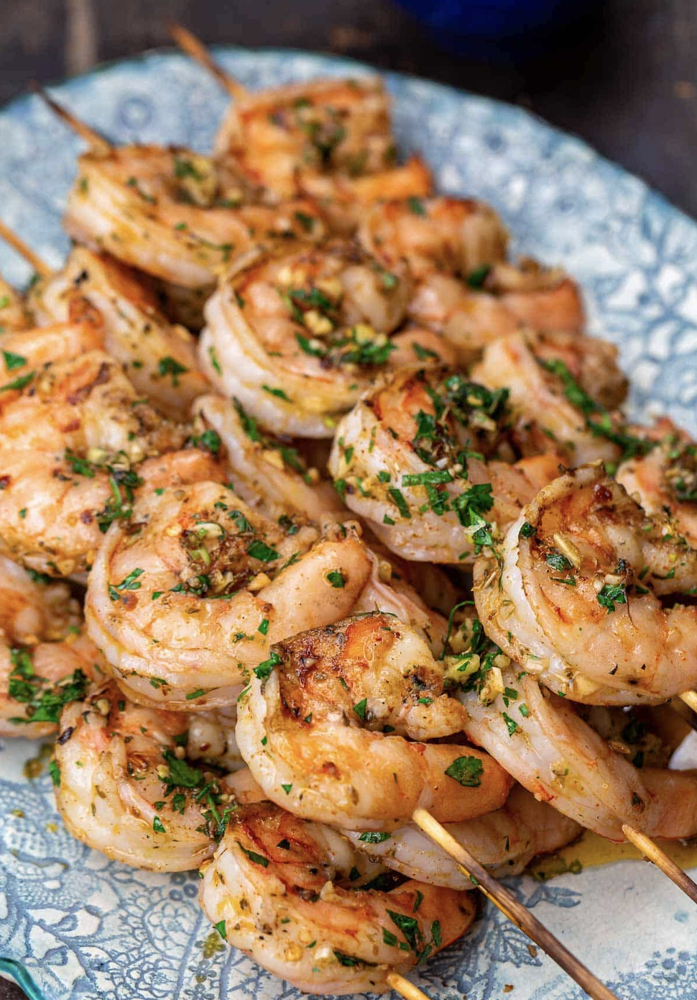

Mediterranean Shrimp Kabobs
Mediterranean Style Shrimp Kabobs

How to Grill Shrimp
A few simple tips make all the difference in achieving flavor packed and perfectly grilled shrimp.
- Start with large shrimp. I usually go with 20/25 shrimp per pound (larger if I can find them).
They're meatier and easier to work. Buy easy-to-peel shrimp and peel them yourself, they're cheaper this way and they taste better.
- Marinate the shrimp for just a few minutes in a tasty olive-oil based marinade (ideally 30 minutes in the fridge,
but even just 10 minutes will help). This is a great way to infuse the shrimp with flavor and keeps them nice and juicy when grilling
(more on the shrimp kabob marinade later)
- Use Skewers. I've been known to grill shrimp in a skillet without skewers; usually I will only do this in a skillet or griddle.
But how do you keep shrimp from falling into the grill or from accidently overcooking? Skewers are your ticket!
Threading the shrimp into skewers also makes them so much easier to flip over (I use a pair of tongs to hold and turn over my shrimp).
If using bamboo skewers, be sure to soak them in water for 30 minutes to an hour before using.
- Do not overcook the shrimp. Even the largest of shrimp will grill quickly (anywhere from 5 to 7 minutes).
Ingredients
For the Marinade
- 1/3 cup extra virgin olive oil
- zest of 2 lemons
- 4 garlic cloves minced
- 1/4 cup packed chopped fresh parsley
- 1 tablespoon paprika
For the Shrimp
- 2 lb large shrimp peeled and deveined
- kosher salt
Steps
- Combine the marinade ingredients in a small bowl. Reserve 2 tablespoon of the marinade in a separate bowl for later.
- Pat the shrimp dry and season with kosher salt. Place the shrimp in a large bowl and pour the marinade all over. Toss to combine.
- Cover and refrigerate for 20 to 30 minutes (do not go longer).
- Thread the shrimp on skewers, about 4 large shrimp per skewer. (If using bamboo skewers they need to be soaked in water for at least 30 minutes first).
- Preheat a gas grill to high. Then, reduce heat to low (temperature should be somewhere between 275 to 325ºF). Carefully grease the cooking grates.
Once the grill reaches the recommended temperature, add the shrimp skewers and close the lid. Cook shrimp for 2 to 3 minutes on each side
or until no longer translucent.
- Transfer the grilled shrimp skewers to platter and spoon the remaining marinade your reserved earlier over the grilled shrimp skewers.
Add a splash of lemon juice. Serve immediately.